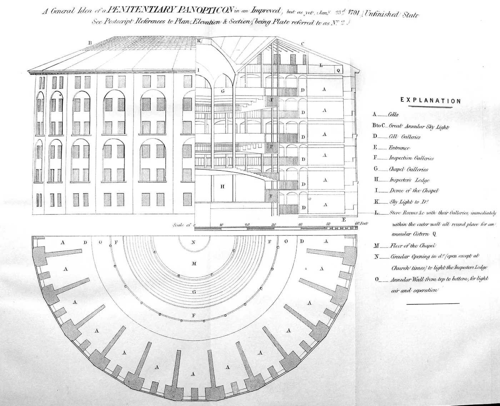

Cidadania, módulo 1, sessão 05
Quem guarda os meus dados?
Versão para imprimir: o material, os 14 exercícios e o papel do fim. Fazes tudo sozinho, só com uma caneta.
Parte 1, ver antes de concluir
Abre: Quem guarda os meus dados?
Caso inventado.
Num mês, desapareceram três telemóveis da sala 12. A associação de estudantes propõe câmaras em todas as salas de aula, a filmar durante as aulas, e afixa um cartaz: «Quem não deve não teme.» A direção decide na próxima semana.
Uma câmara na sala protege quem?
Decide
A escola deve pôr câmaras nas salas de aula?
☐ Sim ☐ Não ☐ Depende
Escreve, numa linha, a razão que pesa mais para ti.
Exercício 1: Prever não é provar
Há quem diga: «Com câmaras, ninguém rouba.» Como se classifica esta frase?
- Uma opinião: diz só o que alguém acha melhor.
- Um facto: os três telemóveis desapareceram mesmo.
- Uma previsão: só o futuro a confirma ou desmente.
Resposta: ______
Exercício 2: Dado para quê
Caso inventado: deste o teu contacto à escola para a visita de estudo. Já que o deste, a escola pode passá-lo à agência de viagens, para publicidade.
☐ Verdadeiro ☐ Falso
Olha: Uma casa de inspeção
Antes de olhar Olha primeiro para a gravura inteira; só depois lê a legenda.

A General Idea of a Penitentiary Panopticon […], 1791, estampa de The Works of Jeremy Bentham, vol. IV, Edimburgo, William Tait, 1843. Biblioteca da Universidade de Sevilha, digitalização no Internet Archive. Registo de origem. Domínio público (Public Domain Mark 1.0).
Exercício 3: Quem vê quem
Pela gravura, de onde se pode ver o anel inteiro das celas?
- Do meio do edifício, onde ficam H e F.
- Da entrada, E, aberta na parede de fora.
- Das janelas da fachada, abertas para a rua.
Resposta: ______
Exercício 4: Gravura, legenda ou nenhuma
Liga cada frase ao que a sustenta: a gravura, a legenda ou nenhuma das duas.
- Quem está numa cela porta-se melhor por poder ser visto.
- Foi Jeremy Bentham quem propôs este edifício.
- As celas ficam em anel, à volta do centro.
- Só a legenda diz
- A gravura mostra
- Nenhuma das duas prova
Liga: 1 ___ 2 ___ 3 ___
Lê: Onde, e para quê
Antes de ler Onde, e para quê?
19.º, n.º 3«Nos estabelecimentos de ensino, as câmaras de videovigilância só podem incidir sobre os perímetros externos e locais de acesso, e ainda sobre espaços cujos bens e equipamentos requeiram especial proteção, como laboratórios ou salas de informática.»
35.º, n.º 1«[…] o direito de acesso aos dados informatizados que lhes digam respeito […] e o direito de conhecer a finalidade a que se destinam […]»
Lei n.º 58/2019; Constituição.
Lei n.º 58/2019, artigo 19.º, n.º 4«Nos casos em que é admitida a videovigilância, é proibida a captação de som, exceto no período em que as instalações vigiadas estejam encerradas ou mediante autorização prévia da CNPD.»
Perímetro externo: a zona à volta dos edifícios. CNPD: Comissão Nacional de Proteção de Dados.
Exercício 5: Uma lista fechada
No n.º 3, sublinha a palavra que fecha a lista: fora dos sítios que a lei nomeia, as câmaras não podem filmar.
Nos estabelecimentos de ensino, as câmaras de videovigilância só podem incidir sobre os perímetros externos e locais de acesso, e ainda sobre espaços cujos bens e equipamentos requeiram especial proteção, como laboratórios ou salas de informática.
Exercício 6: Cada dado, para quê
Caso inventado: o formulário da visita de estudo pede estes dados. Liga cada um à finalidade que o justifica.
- Profissão dos pais
- Autorização do encarregado de educação
- Contacto de emergência
- Alergias alimentares
- Sair da escola em tempo de aula
- Um acidente durante a saída
- O almoço durante a visita
- Nenhuma finalidade da visita
Liga: 1 ___ 2 ___ 3 ___ 4 ___
Exercício 7: Onde a lei deixa
Situação nova: outra escola quer uma câmara virada para um espaço lá dentro. Para onde a lei a deixa virar?
- Para a sala de convívio, com os sofás e as mesas.
- Para a oficina onde se guardam as máquinas de soldar.
- Para o pátio interior, onde os alunos passam o intervalo.
Resposta: ______
Exercício 8: Uma sala não é um laboratório
Como desapareceram telemóveis, a escola pode filmar as salas de aula: são espaços com bens que pedem especial proteção.
☐ Verdadeiro ☐ Falso
Conceito: Para quê, e quanto
O caso
Câmaras nas salas: podiam travar os furtos. Chega isso?
Mais perto
| A pergunta | Na sala 12 |
|---|---|
| Para quê? | travar os furtos de telemóveis |
| Há outro meio? | cacifos com chave, câmaras nas entradas |
| O que custa? | uma turma filmada o dia todo |
O nome
Proporcionalidade
Restringir um direito só no necessário para proteger outro.
O que não é
Não é «quem não deve não teme»: não ter culpa não torna uma câmara necessária.
Na Constituição, as restrições a direitos devem «limitar-se ao necessário para salvaguardar outros direitos ou interesses constitucionalmente protegidos» (artigo 18.º, n.º 2).
Exercício 9: O que a finalidade pede
Caso inventado: para marcar presenças, um programa passa a guardar onde está cada aluno, o dia todo. Completa.
A finalidade é saber [1] ________. Guardar a localização o dia todo [2] ________.
- [1] ☐ por onde anda cada aluno ☐ quem está na aula ☐ se os alunos estão seguros
- [2] ☐ fica justificado se ninguém se queixar ☐ junta dados que a finalidade dispensa ☐ é o meio mais completo
Exercício 10: Um caso real
«[…] o empregador […] não pode sujeitar os seus trabalhadores a uma permanente medida de polícia, transformando-os indefinidamente em suspeitos de prática de ilícitos criminais […]»
Caso real (Supremo Tribunal de Justiça, 2006): depois de furtos de medicamentos, um armazenista filmava os trabalhadores sem parar. O tribunal mandou tirar as câmaras do armazém. Porquê?
- Faziam de cada trabalhador um suspeito, sem prazo.
- Os furtos não tinham acontecido; eram só um receio.
- Faltava à empresa a autorização para as câmaras.
Resposta: ______
Parte 2, pesar e escrever
Volta ao caso: Câmaras nas entradas?
Parte 2
Caso inventado.
A direção propõe câmaras só nas entradas, com as imagens guardadas «para o caso de serem precisas». A associação responde: «Nas entradas, não se vê quem tira o telemóvel da mochila.» Uma aluna pergunta: «E quem vê as imagens? Quando se apagam?»
Lei n.º 58/2019, artigo 21.º, n.º 4«Quando cesse a finalidade que motivou o tratamento […] de dados pessoais, o responsável pelo tratamento deve proceder à sua destruição ou anonimização.»
Exercício 11: Segura não é para sempre
Caso inventado: gravaste uma entrevista para o projeto. Acabado o trabalho, podes guardá-la sem prazo, numa pasta com palavra-passe.
☐ Verdadeiro ☐ Falso
Em turma
A escola deve pôr câmaras nas salas de aula?
☐ Sim ☐ Não ☐ Depende
Compara com a tua escolha do início. A razão que pesou mais: ☐ Os furtos ☐ O «só» (19.º, n.º 3) ☐ O prazo (21.º, n.º 4)
Exercício 12: Cada frase, o seu papel
Caso inventado: o programa de presenças que guarda a localização. Liga cada frase ao seu papel numa justificação.
- Para marcar presenças, a localização o dia todo está a mais.
- Falta saber quem consulta esses dados, e durante quanto tempo.
- O programa guarda onde está cada aluno, o dia todo.
- A Constituição dá o direito de conhecer a finalidade dos dados.
- A aplicação
- A fonte
- O facto
- O limite
Liga: 1 ___ 2 ___ 3 ___ 4 ___
Exercício 13: O passo que falta
Facto: a gravação da entrevista ficou guardada depois do trabalho. Aplicação: acabou a finalidade. Limite: falta saber se a pessoa aceitou outro uso. Escolhe a fonte que falta.
- Quase toda a gente acaba por apagar as gravações antigas.
- A gravação ficou numa pasta protegida com palavra-passe.
- A Lei n.º 58/2019 manda destruir ou anonimizar esses dados.
Resposta: ______
Exercício 14: O que as provas permitem
Escolhe a conclusão que não vai além do caso e da lei.
- Nas salas, sim, porque quem não deve não teme.
- Nas salas, não; nas entradas, falta ver se chega.
- A escola tem de pôr câmaras nas entradas, já.
Resposta: ______
Agora, em papel
Num papel pequeno, sozinho e sem telemóvel.
Uma câmara na sala protege quem?
CódigoData
- A tua conclusão, por agora.
- Uma prova: um facto do caso e uma expressão exata, entre aspas, com o artigo.
- Uma dúvida que ainda tens.
O que conta
- A conclusão responde à pergunta sem ir além das provas.
- A prova junta um facto a uma expressão exata, com o artigo.
- A dúvida, respondida, podia mudar a conclusão.
Um exemplo, sobre outro caso
Outro caso, inventado: um clube de xadrez pede o número do cartão de cidadão para uma inscrição.
- Conclusão: para uma inscrição, o número parece a mais.
- Prova: pedem o número do cartão; a Constituição dá o direito «de conhecer a finalidade a que se destinam» os dados (artigo 35.º, n.º 1).
- Dúvida: o regulamento do torneio exige-o?